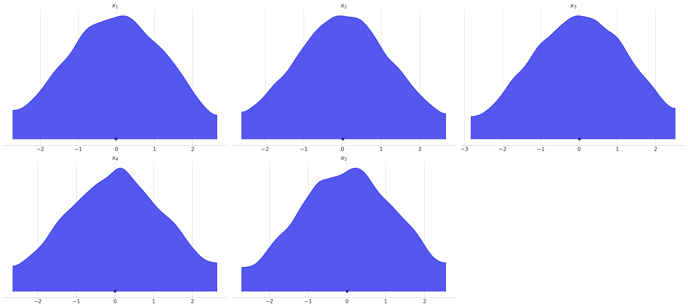
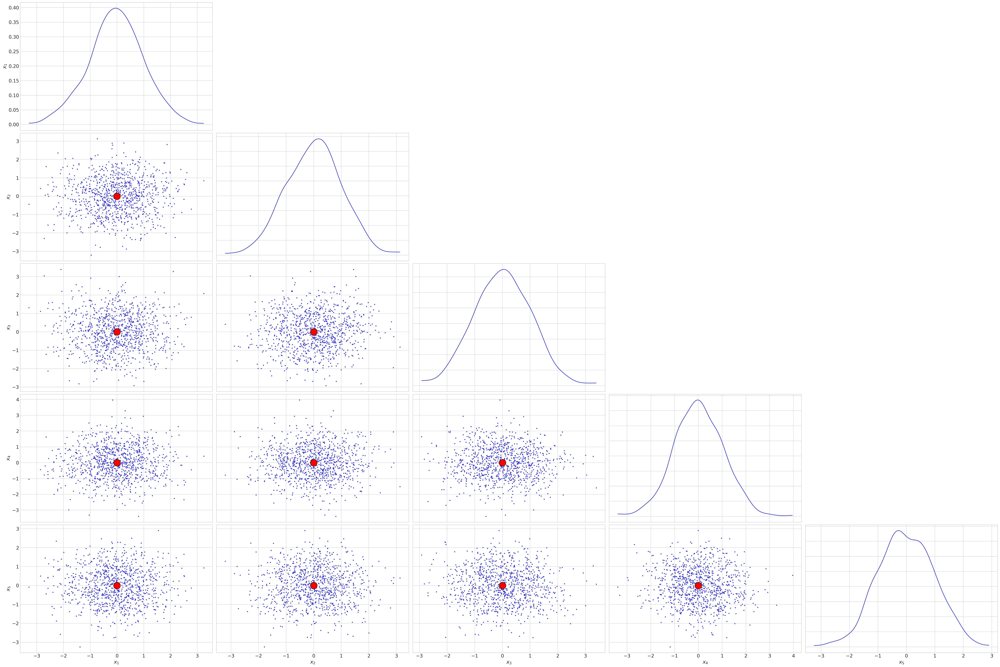
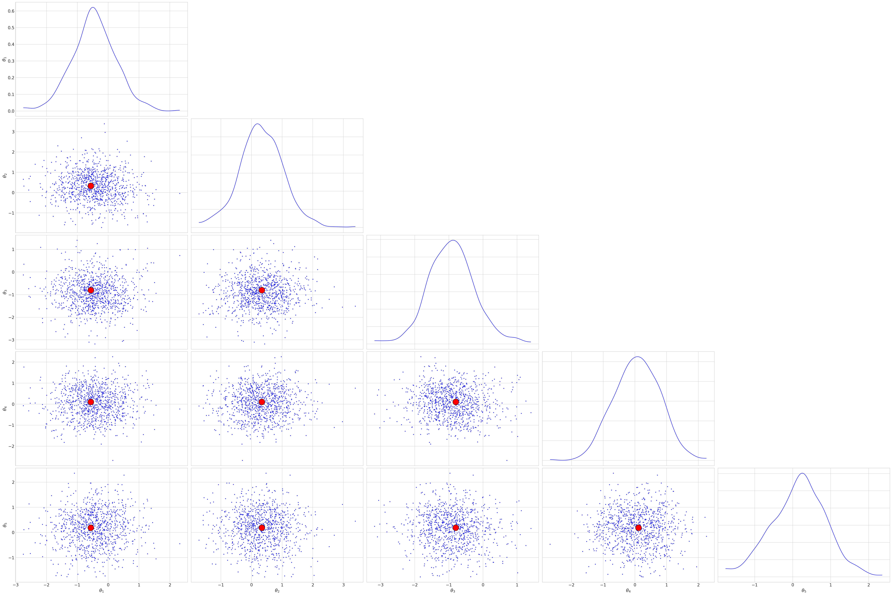

SBI experiments: an introduction¶
In this notebook, we will introduce three major Simulation-based inference algorithms powered by neural networks. We will use them to perform Bayesian inference on the toy example of estimating the centre of a multivariate normal distribution.
All methods used here will be implemented on top of Pytorch, a popular Python package used for performing GPU-accelerated computations with tensors (a.k.a multi-dimensional arrays) as well as for building neural network models.
We will use the SBI algorithms' implementations from the sbi package, which uses Pytorch under the hood.
The model¶
We will choose a model where both parameters and data are sampled from a multivariate normal distribution.
The parameters \(\boldsymbol{\theta} \in \mathbb{R}^n\) are sampled from
where \(\sigma > 0\), \(\boldsymbol{I}_n\) is the n x n identity matrix and \(\boldsymbol{0}_n = \begin{pmatrix} 0 & \ldots & 0 \end{pmatrix}^T \in \mathbb{R}^n\). The data \(\boldsymbol{x} \in \mathbb{R}^n\) are generated as follows:
We hereafter fix \(\sigma = 0.01\).
The analytical posterior¶
The posterior distribution can be calculated analytically for this case. Ignoring normalization factors and terms independent of \(\boldsymbol{\theta}\), we can write
which, after completing the square, is found to follow a multivariate normal \(\mathcal{N}(\mu, \Sigma_T)\) distribution of mean and convariance matrix
the last equality being valid when \(\Sigma_1 = \Sigma_2\).
# Uncomment the line below to install the package in Google colab
#!pip install git+https://github.com/binado/sbisandbox.git
import sys
sys.path.append("..")
import torch
from torch import Tensor
import arviz as az
from sbi import analysis as analysis
from sbi import utils as utils
from sbi.inference import simulate_for_sbi
from sbi.utils.user_input_checks import (
check_sbi_inputs,
process_prior,
process_simulator,
)
%config InlineBackend.figure_format = 'retina'
az.style.use("arviz-whitegrid")
/Users/bernardoveronese/miniconda3/envs/sbibench/lib/python3.10/site-packages/threadpoolctl.py:1214: RuntimeWarning:
Found Intel OpenMP ('libiomp') and LLVM OpenMP ('libomp') loaded at
the same time. Both libraries are known to be incompatible and this
can cause random crashes or deadlocks on Linux when loaded in the
same Python program.
Using threadpoolctl may cause crashes or deadlocks. For more
information and possible workarounds, please see
https://github.com/joblib/threadpoolctl/blob/master/multiple_openmp.md
warnings.warn(msg, RuntimeWarning)
Implementing the model¶
The main ingredient for SBI is the simulator, which serves as a forward model from input parameters \(\boldsymbol{\theta}\) to data samples \(\boldsymbol{x}\). If the input are drawn from a proposal distribution \(\boldsymbol{\theta}\), the simulator implicitly defines the mapping \(\boldsymbol{x} \sim p(\boldsymbol{x} | \boldsymbol{\theta})\).
We implement the gaussian model in the two functions below. Multi-dimensional arrays, or tensors, are represented in Pytorch with the torch.tensor object, which is very similar to Numpy's ndarray, while also having support for running on GPUs.
<torch._C.Generator at 0x10f2543d0>
from torch.distributions import Distribution, MultivariateNormal
cov = 1
theta_loc = torch.zeros(ndim)
# Precision matrix is the inverse of the covariance matrix
theta_precision_matrix = torch.eye(ndim) / cov
x_precision_matrix = torch.eye(ndim) / cov
def get_prior() -> Distribution:
# Return the prior distribution
return MultivariateNormal(loc=theta_loc, precision_matrix=theta_precision_matrix)
def gaussian_linear_simulator(theta: Tensor) -> Tensor:
# theta is a tensor of shape (num_samples, ndim)
return MultivariateNormal(loc=theta, precision_matrix=x_precision_matrix).sample()
def get_true_distribution(x: Tensor) -> MultivariateNormal:
# Return the posterior analytical distribution
precision_matrix = theta_precision_matrix + x_precision_matrix
loc = torch.linalg.solve(precision_matrix, x_precision_matrix @ x.squeeze())
return MultivariateNormal(loc=loc, precision_matrix=precision_matrix)
def log_prob(theta: Tensor, x: Tensor) -> Tensor:
dist = get_true_distribution(x)
return dist.log_prob(theta)
def get_true_posterior_samples(num_samples: int, x: Tensor) -> Tensor:
# Return samples from the analytical posterior
dist = get_true_distribution(x)
return dist.expand((num_samples,)).sample()
Let us define some utility functions which are going to be convenient for generating plots based on our samples:
def get_labels_for_var(var: str, n: int):
return list(map(lambda i: f"${var}_{{{i}}}$", range(1, n + 1)))
def tensor_to_dataset(labels, tensor):
return dict(zip(labels, [tensor[..., i] for i in range(tensor.shape[-1])]))
In the cell below, we use the process_prior and process_simulator helper methods from sbi to convert the prior and simulator into functions whith the appropriate return types for the package. Alternatively, you may use the helper method sbisandbox.utils.validate_model.
prior = get_prior()
# Check prior, return PyTorch prior.
prior, num_parameters, prior_returns_numpy = process_prior(prior)
# Check simulator, returns PyTorch simulator able to simulate batches.
simulator = process_simulator(gaussian_linear_simulator, prior, prior_returns_numpy)
# Consistency check after making ready for sbi.
check_sbi_inputs(simulator, prior)
Visualizing the data¶
Let us use the simulate_for_sbi helper method to generate samples of \(\theta\) and \(x\).
num_simulations = 10000
theta, x = simulate_for_sbi(simulator, proposal=prior, num_simulations=num_simulations)
theta.shape, x.shape
Running 10000 simulations.: 0%| | 0/10000 [00:00<?, ?it/s]
(torch.Size([10000, 5]), torch.Size([10000, 5]))
Density plots for our parameter samples:
theta_labels = get_labels_for_var("\\theta", ndim)
theta_dataset = tensor_to_dataset(theta_labels, theta)
plot_kwargs = dict(shade=0.8, show=True) # grid=(5, 2), figsize=(12, 20), show=True)
az.plot_density(theta_dataset, var_names=theta_labels, **plot_kwargs)
array([[<Axes: title={'center': '$\\theta_{1}$'}>,
<Axes: title={'center': '$\\theta_{2}$'}>,
<Axes: title={'center': '$\\theta_{3}$'}>],
[<Axes: title={'center': '$\\theta_{4}$'}>,
<Axes: title={'center': '$\\theta_{5}$'}>, <Axes: >]],
dtype=object)
Density plots for the generated data:
x_labels = get_labels_for_var("x", ndim)
x_dataset = tensor_to_dataset(x_labels, x)
az.plot_density(x_dataset, var_names=x_labels, **plot_kwargs)

array([[<Axes: title={'center': '$x_{1}$'}>,
<Axes: title={'center': '$x_{2}$'}>,
<Axes: title={'center': '$x_{3}$'}>],
[<Axes: title={'center': '$x_{4}$'}>,
<Axes: title={'center': '$x_{5}$'}>, <Axes: >]], dtype=object)
The output of prior + simulator is the set of samples
for \(i=1, \ldots, N_{sim}\). This will be the data used for the training and validation of the neural network, which are both taken care of by sbi. Higher simulation budgets \(N_{sim}\) increase the training time of the network, but normally yield better approximations for the true posterior - although the scaling is not expected to be linear.
Simulator sanity-checks¶
Let us fix a fiducial \(\boldsymbol{\theta}_0\) and use it as input to our simulator many times to get independent samples of \(\boldsymbol{x} \sim p(\boldsymbol{x} | \boldsymbol{\theta}_0)\), and see if we recover the expected normal distribution centered around \(\boldsymbol{\theta}_0\):
theta_0 = torch.zeros(1000, ndim)
x_of_theta_0 = simulator(theta_0)
x_labels = get_labels_for_var("x", ndim)
def plot_corner(labels, samples, truths):
dataset = tensor_to_dataset(labels, samples)
reference_values = tensor_to_dataset(labels, truths)
with az.rc_context({"plot.max_subplots": ndim**2 + 1}):
_ = az.plot_pair(
dataset,
var_names=labels,
marginals=True,
reference_values=reference_values,
reference_values_kwargs={"ls": "dotted", "markersize": 20, "color": "red"},
)
plot_corner(x_labels, x_of_theta_0, theta_0)

Fixing nominal values:
%precision 3
fiducial_theta, fiducial_x = simulate_for_sbi(simulator, prior, 1)
{
"Fiducial theta": fiducial_theta.squeeze().tolist(),
"Data point": fiducial_x.squeeze().tolist(),
}
{'Fiducial theta': [-1.318, 0.442, -0.404, 0.294, 0.265],
'Data point': [-1.126, 0.674, -1.601, 0.221, 0.372]}
Performing Simulation-based inference¶
Neural Posterior Estimation (NPE)¶
Neural Posterior Estimation (NPE) consists of training a neural density estimator with a simulated dataset to directly approximate the posterior \(p(\boldsymbol{\theta} | \boldsymbol{x})\). One advantage of this approach is that one can directly sample from the amortized approximation of the posterior, without having to perform extra MCMC steps.
The estimator is trained to minimize the loss function
where \(\boldsymbol{\phi}\) is the parameter vector of the neural network. The loss function attains a minimum at \(q_{\boldsymbol{\phi}} (\boldsymbol{\theta} | \boldsymbol{x}) = p(\boldsymbol{\theta} | \boldsymbol{x})\). Indeed, by writing it explicity,
one can apply Bayes' theorem and commute the integrals to write $$ \begin{split} \mathcal{L} &= -\int d\boldsymbol{x} p(\boldsymbol{x}) \int d\boldsymbol{\theta} p(\boldsymbol{\theta} | \boldsymbol{x}) \log q_{\boldsymbol{\phi}}(\boldsymbol{\theta} | \boldsymbol{x}) \ &=D_{KL}\left[q_{\boldsymbol{\phi}}(\boldsymbol{\theta} | \boldsymbol{x}) \parallel p(\boldsymbol{\theta} | \boldsymbol{x}) \right] + \rm{const}, \end{split} $$ where the first term is recognized to be the conditional relative entropy between \(q_{\boldsymbol{\phi}}(\boldsymbol{\theta} | \boldsymbol{x})\) and the true posterior distribution \(p(\boldsymbol{\theta} | \boldsymbol{x})\), which is zero if and only if the two measures are equal almost everywhere, and positive otherwise. The additional constant term does not depend on \(q_{\boldsymbol{\phi}}\) and equals
A common implementation of the estimator \(q_{\boldsymbol{\phi}}(\boldsymbol{\theta} | \boldsymbol{x})\) is with a normalizing flow. In a nutshell, a normalizing flow is based on the idea of a set of invertible and differentible transformations between two distributions. If we consider our generative model as a series of transformations from a simple distribution (e.g. a prior) to a complex distribution (e.g. the posterior), the normalizing flow will attempt to learn the inverse transformations. For a more formal discussion on the subject, we refer the reader to this review paper.
<sbi.inference.snpe.snpe_c.SNPE_C at 0x1548f85b0>
We train the neural network with the train method. A number of arguments can be specified to tune the training hyperparameters (see the docs), but we will stick to their default values here.
Neural network successfully converged after 36 epochs.CPU times: user 2min 25s, sys: 3.25 s, total: 2min 28s
Wall time: 1min 26s
The output of the training is the density estimator, which we can use to build the posterior:
Now that we have built an estimator for the posterior probability \(p(\boldsymbol{\theta} | \boldsymbol{x})\) and drawn a fiducial pair \((\boldsymbol{\theta}_f, \boldsymbol{x}_f)\) to serve as our observed data, we can take posterior samples given \(\boldsymbol{x}_f\). In the last line, we use the .sample method to sample from the approximate posterior density.
Notice that, for now, we will be using only one data point. Therefore, we don't expect the samples to be clustered around \(\boldsymbol{\theta}_f\), but rather the expected value of \(p(\boldsymbol{\theta} | \boldsymbol{x}_f)\), which is \(\boldsymbol{x}_f / 2\).
Drawing 1000 posterior samples: 0%| | 0/1000 [00:00<?, ?it/s]
CPU times: user 130 ms, sys: 11.5 ms, total: 142 ms
Wall time: 89.1 ms
Neural Likelihood Estimation (NLE)¶
Neural Likelihood Estimation (NLE) shares the same philosophy of NPE, but tries to learn the likelihood \(p(\boldsymbol{x} | \boldsymbol{\theta})\) instead of the posterior. Let us redo the calculations with this method.
<sbi.inference.snle.snle_a.SNLE_A at 0x1584484c0>
Neural network successfully converged after 45 epochs.CPU times: user 3min 9s, sys: 4.14 s, total: 3min 13s
Wall time: 1min 57s
The differences between NPE and NLE start to show once we have trained the neural network and want to build the posterior. The density estimator approximates the likelihood \(p(\boldsymbol{x} | \boldsymbol{\theta})\), therefore we need an additional computational step to obtain samples from the posterior \(p(\boldsymbol{x} | \boldsymbol{\theta}) p(\boldsymbol{\theta})\). This may be achieved with standard sampling methods, such as MCMC, rejection sampling, importance sampling, etc. In the context of our toy model, the procedure may seem redundant, as we know the analytical form of the likelihood. However, as we consider more complex models, for which the form of the likelihood is intractable, the SBI approach allows us to relax any analytical approximations (e.g. gaussian distribution) and let the neural network itself learn the non-linear mapping between \(\boldsymbol{\theta}\) and \(\boldsymbol{x}\).
We list below some of the sampling options implemented in the sbi package:
- MCMC
- Rejection sampling
- Importance sampling
- Variational inference
/Users/bernardoveronese/miniconda3/envs/sbibench/lib/python3.10/site-packages/sbi/inference/posteriors/mcmc_posterior.py:114: UserWarning: The default value for thinning in MCMC sampling has been changed from 10 to 1. This might cause the results differ from the last benchmark.
thin = _process_thin_default(thin)
Generating samples with MCMC:
0%| | 0/50 [00:00<?, ?it/s]
0%| | 0/1200 [00:00<?, ?it/s]
CPU times: user 1min 23s, sys: 985 ms, total: 1min 24s
Wall time: 1min 30s
Neural Ratio Estimation (NRE)¶
As we have seen, the output of prior + simulator is the array of pairs \((\boldsymbol{x}_i, \boldsymbol{\theta}_i)\) is drawn from the joint distribution
We now consider the shuffled pairs \((\boldsymbol{x}_i, \boldsymbol{\theta}_j)\), where \(\boldsymbol{x}_i\) is the output of the forward-modeled input \(\boldsymbol{\theta}_i, \, i \neq j\). These pairs are sampled from the product distribution
The idea of NRE is to train a classifier to learn the ratio
which is equal to the likelihood-to-evidence ratio. The application of Bayes' theorem makes the connection between \(r(\boldsymbol{x}, \boldsymbol{\theta})\) and the Bayesian inverse problem:
In other words, \(r(\boldsymbol{x}, \boldsymbol{\theta})\) equals the posterior-to-prior ratio. Therefore, one can get samples from the posterior distribution of \(\boldsymbol{\theta}\) from the approximate knowledge of \(r(\boldsymbol{x}, \boldsymbol{\theta})\) and prior samples from \(\boldsymbol{\theta}\).
More specifically, the binary classifier \(d_{\boldsymbol{\phi}} (\boldsymbol{x}, \boldsymbol{\theta})\) with learnable parameters \(\boldsymbol{\phi}\) is trained to distinguish the \((\boldsymbol{x}_i, \boldsymbol{\theta}_i)\) pairs sampled from the joint distribution from their shuffled counterparts. We label pairs with a variable \(y\), such that \(y=1\) refers to joint pairs, and \(y=0\) to shuffled pairs. The classifier is trained to approximate
where we used \(p(y=0)=p(y=1)=0.5\).
The classifier learns the parameters \(\boldsymbol{\phi}\) by minimizing the binary-cross entropy, defined as
<sbi.inference.snre.snre_b.SNRE_B at 0x157e1b2e0>
Neural network successfully converged after 40 epochs.CPU times: user 1min 9s, sys: 1.54 s, total: 1min 10s
Wall time: 37.1 s
%%time
nre_posterior = nre.build_posterior(
density_estimator=ratio_estimator, sample_with="mcmc"
)
samples_from_nre = nre_posterior.sample((num_samples,), x=fiducial_x)
0%| | 0/50 [00:00<?, ?it/s]
0%| | 0/1200 [00:00<?, ?it/s]
CPU times: user 32.9 s, sys: 738 ms, total: 33.6 s
Wall time: 42.2 s

Analyzing our results¶
For comparison, we draw samples from the true posterior:
samples_from_true_posterior = get_true_posterior_samples(num_samples, fiducial_x)
plot_corner(theta_labels, samples_from_true_posterior, fiducial_x.squeeze() / 2)
We validate our results using the C2ST metric, where a classifier is trained to distinguish samples of the true posterior from samples of the estimated posterior and returns a score between 0.5 and 1. If the samples are indistinguishable, the classification performance should be random, and the returned score is 0.5. Higher scores indicate that the classifier is better able to learn to distinguish between the two sample populations.
from sbi.utils.metrics import c2st
c2st_scores = dict(
zip(
("NPE", "NLE", "NRE"),
(
c2st(samples, samples_from_true_posterior, seed=seed)
for samples in (samples_from_npe, samples_from_nle, samples_from_nre)
),
)
)
print(c2st_scores)
{'NPE': tensor([0.5265]), 'NLE': tensor([0.5030]), 'NRE': tensor([0.5260])}
What if we observe more than 1 data point?¶
We now consider the situation where more data points were collected (in the sense of i.i.d samples from the observed population). While traditional sampling methods would require rerunning the inference pipeline with the new data, the same is not true for SBI: the neural network learns an approximate posterior which is amortized - in other words, it can take any data point \(\boldsymbol{x}\) as argument, and not only the data that was used to train it.
num_trials = 20
fiducial_x_iid = simulator(fiducial_theta.repeat(num_trials, 1))
fiducial_x_iid.mean(dim=0), fiducial_theta
(tensor([-1.0760, 0.4521, -0.0669, 0.1542, 0.2059]),
tensor([[-1.3185, 0.4415, -0.4042, 0.2936, 0.2653]]))
Let us use NRE to get posterior samples from \(p(\boldsymbol{\theta} | \{\boldsymbol{x}_i \})\):
mcmc_parameters = dict(
num_chains=50,
thin=1,
warmup_steps=500,
init_strategy="resample",
)
mcmc_method = "slice_np_vectorized"
posterior = nle.build_posterior(
density_estimator=nle_density_estimator,
mcmc_method=mcmc_method,
mcmc_parameters=mcmc_parameters,
)
samples_from_nre_multiple_trials = posterior.sample((num_samples,), x=fiducial_x_iid)
Running vectorized MCMC with 50 chains: 0%| | 0/26000 [00:00<?, ?it/s]
test_samples = MultivariateNormal(
loc=fiducial_x_iid.mean(dim=0) / (1.0 + 1.0 / num_trials),
precision_matrix=(num_trials + 1) * torch.eye(ndim) / cov,
).sample((num_samples,))
References¶
[1]: Cranmer, Kyle, Johann Brehmer, and Gilles Louppe. "The frontier of simulation-based inference." Proceedings of the National Academy of Sciences 117.48 (2020): 30055-30062.
[2]: Tejero-Cantero, Alvaro, et al. "SBI--A toolkit for simulation-based inference." arXiv preprint arXiv:2007.09114 (2020).
[3]: Kobyzev, Ivan, Simon JD Prince, and Marcus A. Brubaker. "Normalizing flows: An introduction and review of current methods." IEEE transactions on pattern analysis and machine intelligence 43.11 (2020): 3964-3979.
[4]: Lueckmann, Jan-Matthis, et al. "Benchmarking simulation-based inference." International conference on artificial intelligence and statistics. PMLR, 2021.